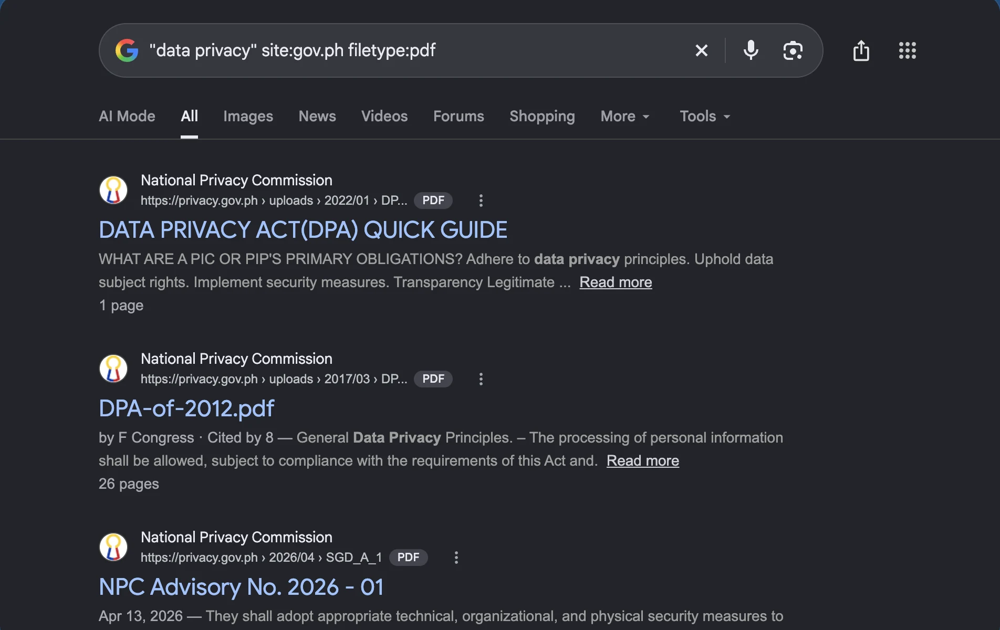
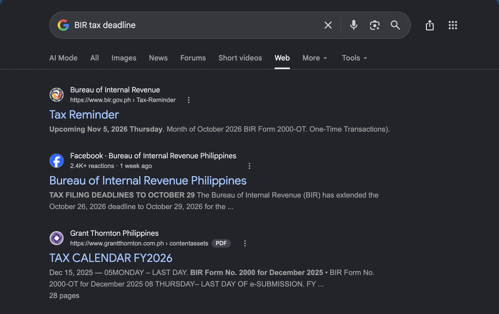

Module 1 · Computers and Internet Essentials
Web Browsing and Search Engines
Get to the right website, and know which sources to trust


1.3
Digital Productivity Essentials · 1.3 Web Browsing and Search Engines
The big idea
The internet is a huge library
🧭
Browser
How you walk in and read: Chrome, Edge, Firefox, Safari
🔎
Search engine
The librarian who finds pages: Google, Bing
🏛️
Website
One book, owned by someone: www.bir.gov.ph
Google is the search engine. Chrome is the browser.
Digital Productivity Essentials · 1.3 Web Browsing and Search Engines
Inside the browser
Five parts you use every day
Microsoft Edge (Mac shown) · Chrome and Edge on Windows match
T
Ctrl+T, Ctrl+W
New tab, close tab. Ctrl+Shift+T brings it back
D
Ctrl+D
Save the page: Favorites in Edge, Bookmarks in Chrome
J
Ctrl+J
List downloads, then move each file
Digital Productivity Essentials · 1.3 Web Browsing and Search Engines
Read the address
Who really owns this website?
1
🔒
https://
Secure connection
→
2
🌐
www.
Optional prefix
→
3
🏛️
bir.gov.ph
The domain: the real owner
→
4
📄
/downloads
A page inside the site
.gov.ph is reserved for Philippine government offices.
Digital Productivity Essentials · 1.3 Web Browsing and Search Engines
Two traps
Don't let the address fool you
🎣
The lookalike
www.bir.gov.ph.claim-refund.site
- Owned by claim-refund.site, not BIR
- Read the part just before the first single /
🔒
The padlock myth
Not a seal of honesty
- It only means the connection is private
- Scam sites can have padlocks too
Made-up example, for training only.
Digital Productivity Essentials · 1.3 Web Browsing and Search Engines
Search like a pro
Four tricks that work in Google and Bing
❝
" " Exact phrase
"internet safety tips"
🏛️
site:
internet safety site:gov.ph
➖
- Leave out
adobo recipe -chicken
📄
filetype:
data privacy act filetype:pdf
Digital Productivity Essentials · 1.3 Web Browsing and Search Engines
Try it
Mix the tricks for trusted results

Google Search in Microsoft Edge · live results, 4 Nov 2026
❝
Quotes
Keep the phrase together
🏛️
site:gov.ph
Only government sites
📄
filetype:pdf
Only PDF files
Digital Productivity Essentials · 1.3 Web Browsing and Search Engines
Before you believe or share
Five questions for any website

Google Search in Microsoft Edge · live results, 4 Nov 2026 · no ads showed
🏛️
Who made it?
Check the domain
📅
When?
Old rules may have changed
💰
Is it an ad?
Sponsored means paid
Digital Productivity Essentials · 1.3 Web Browsing and Search Engines
Use it well
Smart searching at work and at home
🏢
At the office
- Forms and announcements from bir.gov.ph, not reposts
- Bookmark the sites your section uses daily
- Use site:gov.ph to check any government notice
🏠
At home
- Homework: search with quotes, compare two sources
- Class suspension or typhoon news: official pages, not chain messages
- Online shopping: check the seller's reviews
Digital Productivity Essentials · 1.3 Web Browsing and Search Engines
Quick check
You want only PDF files from the BIR website. Which search?
ABIR pdf files
Bsite:bir.gov.ph filetype:pdf
C-bir -pdf
D"bir.gov.ph pdf"
site: limits the website and filetype: keeps only PDFs. The minus sign removes words instead.
Digital Productivity Essentials · 1.3 Web Browsing and Search Engines
Recap · Topic 1.3
Read the address, search smart, check the source
Know the tools
Browser to read, search engine to find, website to visit
Search smart
Quotes, site:, minus, filetype:, official sites first
Judge sources
Who, when, why, who agrees, is it an ad?
Next · 1.4 Internet Safety, Netiquette and Data Privacy
We search online every day:
a recipe, a typhoon update, a tax form.
Often we click the first result and hope.
In this video, you'll learn the tools by name,
read a web address so fake sites can't fool you,
search like a pro, and judge a source in under a minute.
Think of the internet as a huge library.
The browser is how you walk in and read:
Chrome, Edge, Firefox or Safari.
The search engine is the librarian who finds pages for
you, like Google or Bing. A website is one book on the shelf,
owned by someone, like bir dot gov dot ph.
A common mix-up:
Google is the search engine. Chrome is the browser.
Inside the browser, five parts.
Tabs keep many pages in one window:
Control T opens one, Control W closes it,
and Control Shift T brings it back.
Then back, forward and reload.
The address bar takes a web address or a search.
Bookmark a page you use often with Control D.
And downloads land in the Downloads folder.
Then move each file into the right folder.
Before you trust a page, read its address in parts.
H T T P S means the connection is secure.
W W W is an optional prefix.
Then the domain, bir dot gov dot ph:
the real owner.
Anything after the slash is just a page inside the site.
And dot gov dot ph is reserved for Philippine government
offices.
Here's a trick scammers use.
This made-up address starts with bir dot gov dot ph,
then adds claim refund dot site.
The real owner is claim refund dot site, not BIR.
So read the part just before the first single slash.
And the padlock?
It only means the connection is private.
Scam sites can have padlocks too.
Now, four search tricks that work in Google and Bing.
Put quotes around a phrase to find those words together, in that order.
Type site, colon, gov dot ph to get only Philippine
government pages.
A minus sign right before a word leaves it out: adobo recipe, minus chicken.
And filetype, colon, PDF gives you only PDF documents,
great for forms.
Mix them for even better results.
Type quote, data privacy, quote, then site colon gov dot
ph, then filetype colon PDF.
The quotes keep the phrase together. Site gives you only government sites.
Filetype gives you only PDF files.
Press Enter, and the results are all PDFs from government
sites, not random reposts.
A post says there's a new tax deadline.
Ask five quick questions. Say you search BIR tax deadline.
Who made it? Check the domain. When was it posted?
Old rules may have changed. Why does it exist:
to inform, to sell, or to scare you?
Does another source agree?
And is it an ad? Sponsored results are paid placements.
At the office: get forms and announcements from bir dot gov dot ph,
not from reposts.
Bookmark the sites your section uses daily,
and search site colon gov dot ph to check a government notice.
At home: for homework, search with quotes and compare two sources.
For class suspensions or typhoon news,
trust official pages, not chain messages.
And check a seller's reviews before you pay.
Quick check. You want only PDF files from the BIR website.
Which search?
A: BIR PDF files. B: site colon bir dot gov dot ph,
filetype colon PDF.
C: minus BIR, minus PDF.
Or D: the same words in quotes.
Think about it for a moment. The answer:
it's B.
Site limits the website, and filetype keeps only PDFs.
To recap. Know the tools: the browser, the search engine and the website.
Search smart: quotes, site, minus and filetype.
And judge sources before you believe or share.
Next, in topic 1.4, we'll spot the scams that use
fake websites, and protect our accounts and taxpayer data.